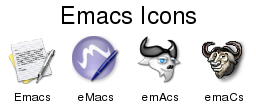
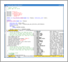
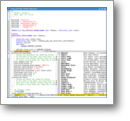
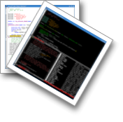

Contents
使用 montage 来产生缩略图
montage 命令可以用来产生缩略图，例如：
montage *.png montage.png
会产生：
这样产生的边距太大了，可以用 -geometry 参数来控制：
montage *.png -geometry +1+1 montage.png
产生的效果为：
-geometry 使用这样的语法： widthxheight{+-}x{+-}y ，可以设定大小和位置。
默认 montage 会选择合适的行数和列数来产生缩略图，不过你可以用 -tile 参
数来手工控制：
montage *.png -geometry +1+1 -tile 4x1 montage.png
产生一行的效果：
如果这儿图形的个数不确定，也可以简略地写成 -tile x1 。还有其他参数，比
如，可以通过 -shadow 来产生阴影、通过 -frame 来产生边框。也可以为图像加
上标签，通常加上标签之后要改变一下大小好让标签能够放得下，在 -geometry
参数后面加的那个 `>' 表示设置 -geometry 的同时并不同时放大原来的图像：
montage -label '%f' *.png -tile x1 -frame 5 \
-geometry '60x60+4+4>' montage.png
其中 `%f' 表示文件名，还有其他格式化字符，如 `%w' 表示宽度、`%h' 表示
高度等。你也可以用 -set 来达到同样的目的：
montage *.png -tile x1 -frame 5 -geometry '90x48+4+4>'
-pointsize 10 -set label '%f\n%2x%h' montage.png
你也可以分别为每个图片指定标签，如果使用 -set 来指定，则必须要用括号扩
上：
montage -label Emacs Emacs.png \
-label eMacs eMacs.png \
\( emAcs.png -set label emAcs \) \
\( emaCs.png -set label emaCs \) \
-tile x1 -geometry '60x60+2+2>' \
-title 'Emacs Icons' montage.png
如图：

你可以通过 -label '' 或者 +label ( -set 选项也是类似的)来关掉图片的标签
显示，但是两者又有一些不同的地方，例如，png 格式的图片通常可以把标签存
储在图片文件里面：
convert -label 'Emacs' Emacs.png Emacs.png convert -label 'eMacs' eMacs.png eMacs.png
默认 montage 会读取图片中的标签并把它显示出来，这和使用 `%l' 参数是一
样的，这个时候 -label '' 和 +label 的区别就显示出来了：
montage -label '' Emacs.png \
+label eMacs.png \
-tile x1 -geometry '60x48+2+2>' montage.png
可以看到 +label 是把标签设定成从文件读取的默认情况，而 -label '' 则明
确地关掉了所有标签显示。
实例：制作类似相片的效果
ImageMagick 的功能实在太多，一时无法讲完，详细的内容可以参见它的文档。 下面还是让我们来把几个 Emacs color-theme 的抓图制作成几张叠加的照片的 效果。首先分别设定几个 color-theme ，然后分别建立抓图：
import -frame 1.png import -frame 2.png import -frame 3.png import -frame 4.png
抓的图片太大了，让我们先把他们缩小一点吧：
for file in *.png; do
convert $file -resize 400x $file
done
好了，现在让我们来制作相片的边框，其实就是先加一个白色的边框，再加一个 灰色的边框，先用产生一个小一点的图来试验一下吧：
convert 1.png -resize 100x100 -bordercolor white -border 6 \
-bordercolor grey60 -border 1 1-border.png
OK！这样就是边框了，如图所示：

这样还不够 cool ，让我们来产生一点阴影：
convert 1-border.png -shadow 60x4+4+4 1-shadow.png
这样就产生了阴影：
接下来要做的是把阴影和原来的图形融合到一起：
convert 1-shadow.png 1-border.png -background none \
-mosaic 1-border-shadow.png

把上面的步骤连在一起做就是：
convert 1.png -resize 100x100 \
-bordercolor white -border 6 \
-bordercolor grey60 -border 1 \
\( +clone -shadow 60x4+4+4 \) \
+swap -background none -mosaic \
1-border-shadow.png
好了，知道如何制作边框了，现在要把几张“照片”组合在一起，让我们再用同样 的办法产生一个 2-border-shadow.png ，然后把一张旋转一下，移动一点，然 后把他们组合在一起：
convert 1-border-shadow.png \
\( -page 20x30 2-border-shadow.png \
-background none -rotate 30 \) \
-background none -mosaic mosaic.png

好了！这就是基本流程，用类似的办法，我们可以把四张“照片”组合在一起了， 而且我决定最后才加上阴影，而不是每一张都加阴影：
convert \( -page +0+40 1.png \
-bordercolor white -border 6 \
-bordercolor grey60 -border 1 \
-background none -rotate -5 \) \
\( -page +30+0 2.png \
-bordercolor white -border 6 \
-bordercolor grey60 -border 1 \
-background none -rotate 20 \) \
\( -page +10+40 3.png \
-bordercolor white -border 6 \
-bordercolor grey60 -border 1 \
-background none -rotate 40 \) \
\( -page +20+50 3.png \
-bordercolor white -border 6 \
-bordercolor grey60 -border 1 \
-background none -rotate -20 \) \
-background none -mosaic \
\( +clone -shadow 60x4+4+4 \) \
+swap -background none -mosaic mosaic.png
这样就能够得到我们的成品了，这幅图像用来展现 Emacs color-theme 算是非 常不错的了。